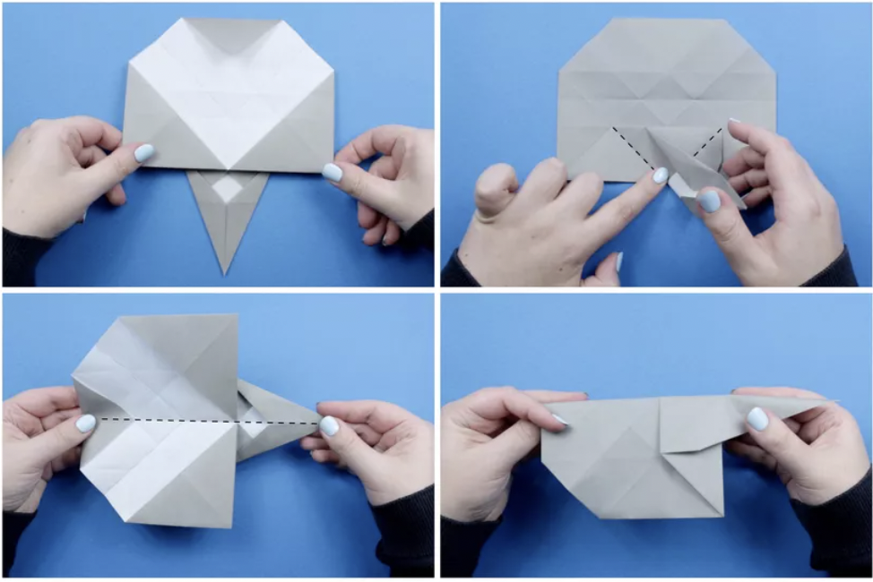

WHAT IS SPECIAL ABOUT THEM?
Making an origami elephant is not only a really cool craft skill, but it makes for a great present
for your favorite origami lover. This is an intermediate-level origami project, made from a single
sheet of square paper. If you are a beginner at origami, you may find this project tricky, but it's
so cute, you won't regret learning how to do it.
Make your very own origami elephant by following these simple steps.
1. The First Folds
# Start with your paper white side up, if it has one. Fold the paper in half, from left to right and then bottom to top.
# Next, fold the top and bottom edge to the horizontal central crease and unfold.
# Fold the left and right edges to the vertical central crease and unfold.
# You now have a neat grid of 15 equal sections.
2. Rotate the Paper
# Rotate the paper so that it is a diamond.
# Fold the top, bottom and left corner to the central crease–not the right corner (keep this corner on the right side–this will become the elephant's head).
# Fold the bottom edge up to meet the top-most horizontal crease. Unfold.
# Repeat the last step, fold the top corner down to the lowest horizontal crease, and the right and left corners to their opposing creases.
3. Flip and Fold
# Fold the paper as shown, creasing only where indicated.
# Repeat for the other diagonal crease.
# Flip the paper over, from top to bottom, keeping the right (uncreased) section on the right.
# Fold the left corner to the right, to the point indicated. For thick paper, avoid the middle diamond.
4. Fold the Corners In
# Flip the paper over, from top to bottom.
# Repeat for the other diagonal crease.
# Fold the bottom right section diagonally up to the left, followed by the top right section.
# Fold the right section over to the left, squashing the diagonal folds you just made.

5. Rotate and Fold
# Rotate the paper.
# Now you can grab the bottom section and flip it under and behind. The top flap will come down to the bottom.
# Next, you'll fold the left and right corners of the lower section to the central crease.

6. The V-Shape Fold
# Flip the paper over to the other side.
# There is a V-shaped crease on the top of the front-most flap–these creases need to be re-folded as valley creases
# Flip the model over and rotate as shown.
# Fold the model in half, from top to bottom.
7. Forming the Trunk
# Hold onto the elephant's trunk and the back of his head, push gently. A new crease will form.
# There should be a diamond shape on top of the elephant. Open out the bottom of the model and push on that diamond, flattening it.
# Pinch the diagonal edge that appears on the left.
8. Shaping the Other Side
# Fold the flap over to the right.
# There is already a crease here; fold it over and tuck it behind.
# Now you need to repeat these steps on the other side of the elephant.
# Find the back of the elphant and pinch it, keeping that diamond intact.
9. Forming Pleats
# Make a small, thin fold.
# Open the flap that was under the tail-end of the elephant.
# Hold it as shown.
# The left of the diamond shape needs to be folded into pleats over to the right.
10. Finishing the Elephant
# Fold the top corner over and underneath the elephant. It will secure his "legs."
# Now you can shape the trunk however you like. You can fold it to be pointing up or down. After deciding, make a crease and then inside reverse fold it. Your origami elephant is now complete.
my source: The spruce crafts